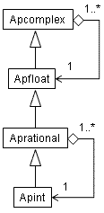

Package org.apfloat
All application code using apfloat generally needs to only call the classes in this package.
A sample apfloat program might look like this:
import org.apfloat.Apfloat;
import org.apfloat.ApfloatMath;
public class ApfloatTest
{
public static void main(String[] args)
{
Apfloat x = new Apfloat(2, 1000); // Value 2, precision 1000 digits
Apfloat y = ApfloatMath.sqrt(x); // Square root of 2, to 1000 digits
System.out.println(y);
}
}
As apfloats are immutable, they can be easily passed by reference. Also
the mantissa data of numbers can be efficiently shared in various situations.
An inherent property of an Apfloat is the radix.
The radix is specified at the time an apfloat is created. Due to the way the
default implementation works, there is no real performance difference in using
radix 2 or some other radix in the internal calculations. While it's generally
not possible to use numbers in different radixes in operations, it's possible
to convert a number to a different radix using the Apfloat.toRadix(int)
method.
The rounding mode for apfloat calculations is undefined. Thus, it's not
guaranteed that rounding happens to an optimal direction and more often
than not it doesn't. This should be carefully considered when designing
numerical algorithms. Round-off errors can accumulate faster than expected,
and loss of precision (as returned by Apfloat.precision())
can happen quickly. This bad behaviour is further accelerated by using a radix
bigger than two, e.g. base 10, which is the default. Note that precision is
defined as the number of digits in the number's radix. If numbers need to
be rounded in a specific way then the ApfloatMath.round(Apfloat,long,RoundingMode)
method can be invoked explicitly.
Generally, the result of various mathematical operations is accurate to the second last digit in the resulting number. This means roughly that the last significant digit of the result can be inaccurate. For example, the number 12345, with precision 5, should be considered 12345 ± 10. This should generally not be a problem, as you should typically be using apfloats for calculations with a precision of thousands or millions of digits.
There is no concept of an infinity or Not-a-Number with apfloats. Whenever
the result of an operation would be infinite or undefined, an exception is
thrown (usually an ArithmeticException).
All of the apfloat-specific exceptions being thrown by the apfloat library
extend the base class ApfloatRuntimeException. This
exception, or various subclasses can be thrown in different situations, for
example:
InfiniteExpansionException- The result of an operation would have infinite size. For example,new Apfloat(2).divide(new Apfloat(3)), in radix 10.OverflowException- Overflow. If the exponent is too large to fit in along, the situation can't be handled. Also, there is no "infinity" apfloat value that could be returned as the result.LossOfPrecisionException- Total loss of precision. For example,ApfloatMath.sin(new Apfloat(1e100)). If the magnitude (100) is far greater than the precision (1) then the value of thesin()function can't be determined to any accuracy.
RuntimeException, because it should "never happen",
and in general the cases where it is thrown are irrecoverable with the current
implementation. Also any of the situations mentioned above may be relaxed in
the future, so this exception handling strategy should be more future-proof
than others, even if it has its limitations currently.
The Apfloat class is the basic building block of all the
objects used in the apfloat package. An Apcomplex simply
consists of two apfloats, the real part and the imaginary part. An
Apint is implemented with an apfloat and all its operations
just guarantee that the number never gets a fractional part. Last, an
Aprational is an aggregate of two apints, the numerator
and the denominator. The relations of these classes are shown in a class
diagram format below:

-
Class SummaryClassDescriptionArbitrary precision complex number class.Various mathematical functions for arbitrary precision complex numbers.Arbitrary precision floating-point number class.This class encapsulates the information needed by the apfloat implementation to perform computations.Various mathematical functions for arbitrary precision floating-point numbers.Arbitrary precision integer class.Various mathematical functions for arbitrary precision integers.Arbitrary precision rational number class.Various mathematical functions for arbitrary precision rational numbers.Fixed-precision mathematical functions for complex numbers.Fixed-precision mathematical functions for floating-point numbers.
-
Exception SummaryExceptionDescriptionException indicating an error in the apfloat configuration.Exception indicating some unexpected error situation.Exception indicating that the result of an operation would have infinite size.Exception indicating a result that would have no significant digits.Exception indicating an overflow in a calculation.